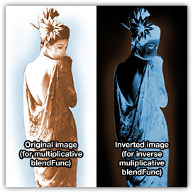
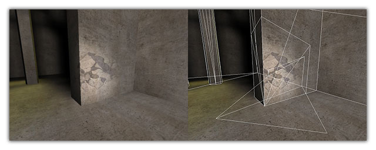

Multiplicative Decals
Instead of doing blended or additive decals, sometimes the best effect is actually a multiply:
blendFunc GL_DST_COLOR GL_ZERO
The source texture is white with yellow/blue (or whatever) arrow on it. Combined with polygonOffset and perhaps a sort key, this can be a great way to get a decal effect that works okay with bullet marks and player shadows.
Inverse Multiplicative Shadows
While the above trick works well 95% of the time, sometimes you need to use fog. In order for a multiplicative decal to face out properly in fog, it has to be inverted, and using an inverse blendFunc:
blendFunc GL_ZERO GL_ONE_MINUS_SRC_COLOR
The source image will be negative of the above image, (white = black, blue = yellow, etc). This is the trick that the player shadow mark shader use.

textures/obsidian-blastburn_decals/p-geisha
{
noPicMip
//draws polygons of this shader just above coplanar surface
polygonOffset
//prevents bounce from affecting this shader
q3map_bounceScale 0
surfaceparm detail
surfaceparm nomarks
surfaceparm nonsolid
{
map textures/obsidian-blastburn_decals/p-geisha.tga
//inverse multiplicative blend (TGA channels inverted)
blendFunc GL_ZERO GL_ONE_MINUS_SRC_COLOR
}
}
Using _decal Entities
Sometimes laying out perfect patch meshes aligned with geometry is too much of a pain in the ass. Enter _decal entities. Add the following to your entities.def (Enemy Territory mappers should already have it):
/*QUAKED _decal (0 1.0 0) ? -------- KEYS -------- "target" : the name of the entity targetted at for projection -------- SPAWNFLAGS -------- (none) -------- NOTES -------- Compiler-only entity that specifies a decal to be projected. Should contain 1 or more patch meshes (curves) and target an info_null entity. The distance between the center of the _decal entity and the target is the axis and distance of projection. */
Make a simple patch mesh (it can be bent, but the quads in Radiant must be rectangular), select it and use the right-click context menu to turn it into a _decal entity. Target an info_null below the _decal entity and compile. Everything between the decal patch and the info_null will have a decal projected onto it.
Make sure you compile with a recent (post-2.5) version of Q3Map2 with _decal support.
It will project onto terrain, brushes, models, patches, whatever. To suppress decals on particular shaders, use surfaceparm nomarks.
Happy decaling!
-ydnar